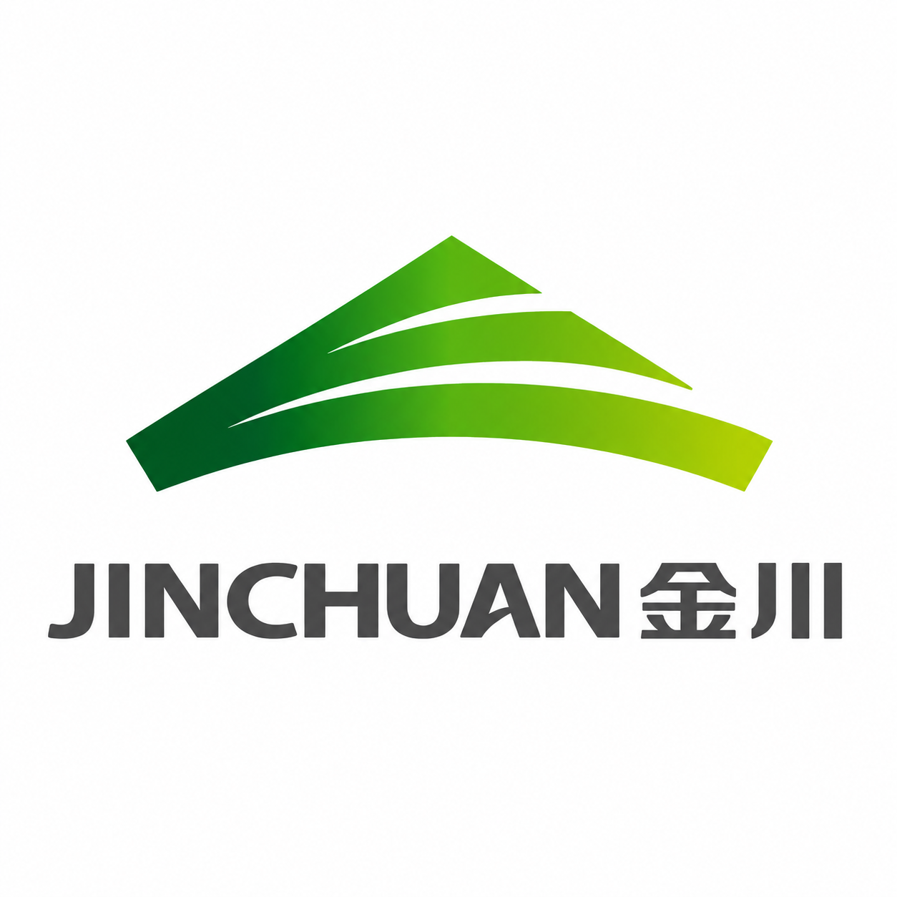
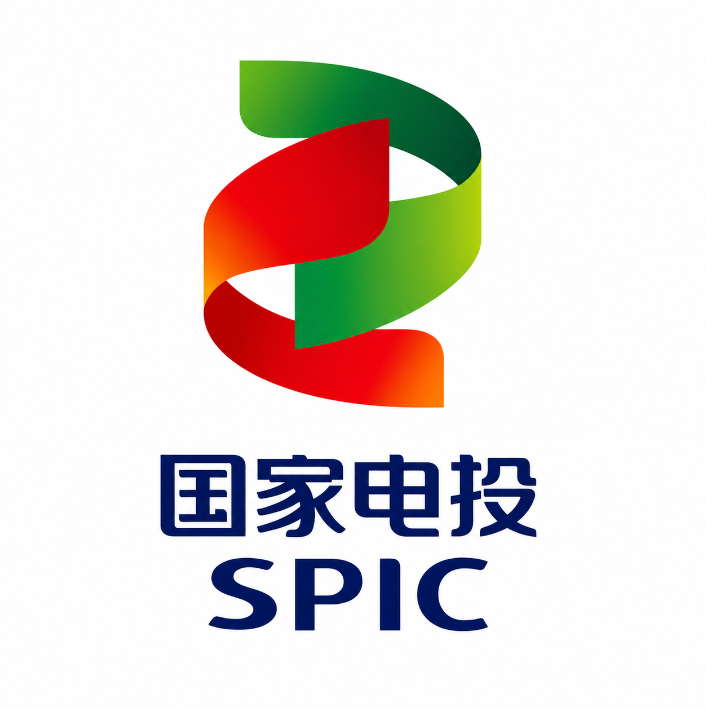
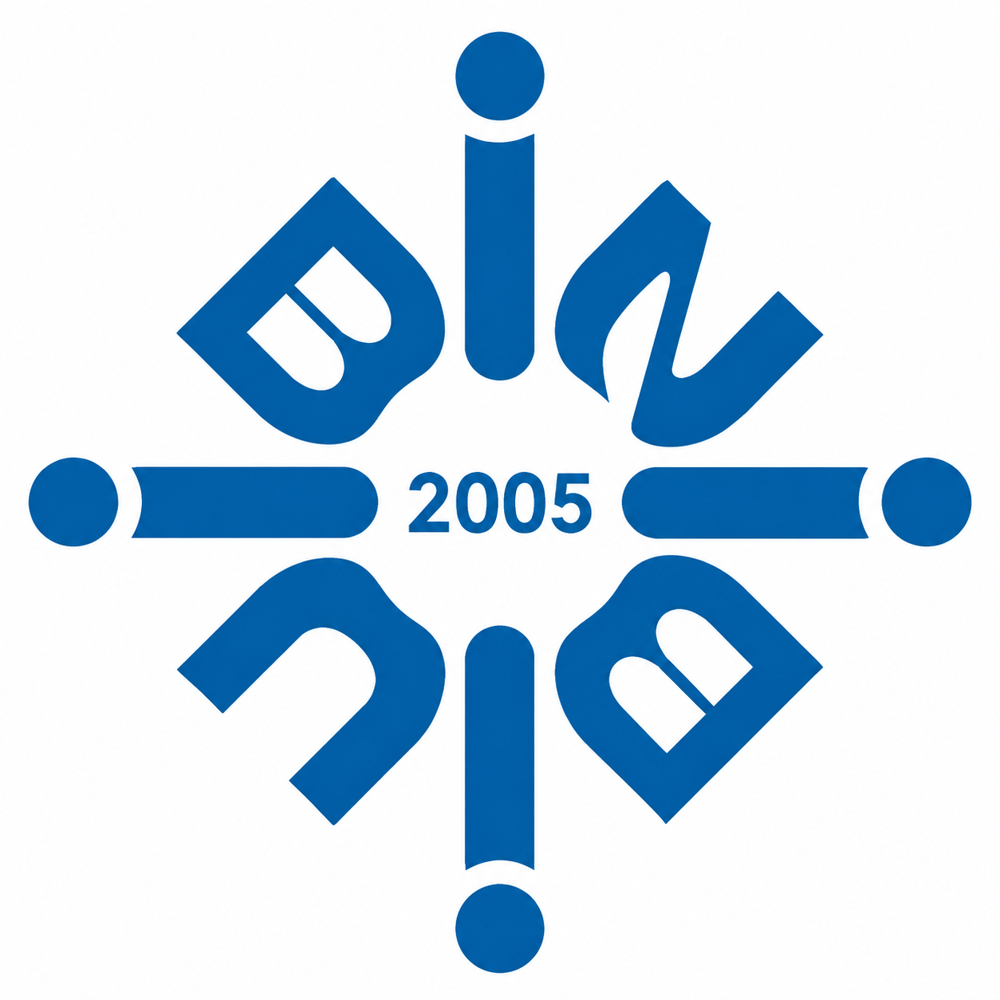

University of New South Wales
MCom in Business Analytics
Feb. 2026 – Feb. 2027
An interdisciplinary researcher bridging accounting and AI to examine how corporate sustainability claims can be extracted, evidenced, and tested for credibility.

I am an interdisciplinary researcher working across accounting, business analytics, and artificial intelligence. My research centres on the credibility of corporate ESG disclosure — how sustainability claims can be extracted from multimodal reporting materials, linked to source evidence, and evaluated for consistency, greenwashing risk, and empirical credibility.
I am currently pursuing a Master of Commerce in Business Analytics at the University of New South Wales. I previously earned a Bachelor of Administration (Honours) in Accounting from Hong Kong Baptist University, completed at its Zhuhai campus, Beijing Normal-Hong Kong Baptist University. My undergraduate thesis, supervised by Dr. Man Hung Alvin Cheng, examined the impact of ESG disclosure on corporate investment efficiency. Building on this accounting and ESG research background, I am now extending my work toward computer science and AI-driven sustainability intelligence.
My research interests include ESG disclosure quality, narrative consistency, greenwashing-gap detection, corporate sustainability assurance, and responsible AI for financial and non-financial reporting. Methodologically, I work across panel econometrics, causal inference, machine learning, explainable AI, retrieval-augmented generation, and NLP-based text analysis.
I am currently developing an AI-assisted ESG report extraction and evidence-mapping system, which aims to transform unstructured sustainability reports into structured, traceable, and auditable evidence for downstream textual and empirical analysis.
I am looking for collaborators interested in ESG analytics, responsible AI, financial data science, and corporate disclosure research. My goal is to develop transparent and verifiable tools for evaluating sustainability claims — bridging accounting research, econometric rigor, and modern language-model capabilities.
Curriculum Vitae


A visual map of my interdisciplinary training and research toolkit, connecting accounting, business analytics, and computer science with empirical ESG research and AI-driven sustainability intelligence.
New projects are on the way — an AI-assisted ESG report extraction and evidence-mapping system is currently in development.
Beyond research, I enjoy travelling, playing badminton, listening to music, and spending time with my cat. I am drawn to natural landscapes, museums, and the freedom of wandering through cities without a fixed route. Hong Kong is one of my favourite places, especially for its Victoria Harbour, skyline, and the contrast between mountains, sea, and dense urban life.
In everyday life, badminton helps me relax and stay active, while pop, R&B, and Cantopop often accompany my walks, travels, and quiet breaks. Recently, I have also been building my personal website and exploring study-abroad vlogging as a way to document small moments beyond research. Head to the full gallery to see more.